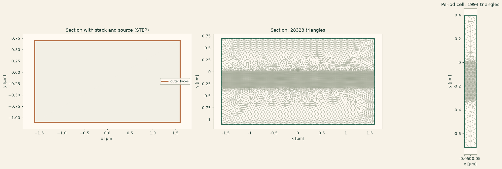

Docs › Examples › Hyperbolic waves in a metal-dielectric layered metamaterial
Wave optics · 2D
Hyperbolic waves in a metal-dielectric layered metamaterial
Eight bilayers of 20 nm silver and 20 nm dielectric act as a hyperbolic medium at 800 nm: reflection and transmission of TM light, and the resonance cones of a line source.
Run locally with OneSimulation. The example downloads are free. Running them requires an activated runtime. Runtime Alpha 0.2.1a7 · CPython 3.13 on macOS (Apple Silicon), Ubuntu 22.04 (x86-64), and Windows x64. Installation and activation · View pilot plans. Scope of the reference checks.

What it computes
OneSimulation solves the in-plane electric field with Nedelec elements on sections read from STEP files drawn in micrometres; the meshes are scaled to metres and the models are solved in SI units. One period of the infinite stack with Bloch-periodic sides and Floquet ports gives reflection and transmission at all angles; a line current above a section through the stack, closed by absorbing layers, launches the resonance cones. The script that builds the STEP files comes with the notebook.
What it checks
Over 18 angles reflection and transmission of the stack agree with the exact transfer-matrix result to 8e-7 (the stack reflects 99 % of TM light: the hyperbolic medium has no propagating waves for small wavenumbers); the power of the line source equals absorption in the silver plus the flux into the absorbing layers to 2.7e-4; the energy in the stack flows more steeply sideways than the effective-medium cone of 50 deg, because the near field of the source holds wavelengths comparable to the period.
Geometry
The notebook starts at the import of the CAD files hyperbolic_metamaterial_layers.step, hyperbolic_metamaterial_layers_cell.step, hyperbolic_metamaterial_layers_cell_dielectric.step, hyperbolic_metamaterial_layers_cell_metal.step, hyperbolic_metamaterial_layers_dielectric.step, hyperbolic_metamaterial_layers_metal.step, hyperbolic_metamaterial_layers_source.step: STEP (AP242), readable by any CAD program, with the names of the faces that the boundary conditions use. Put them next to the notebook.

The geometry script
The script hyperbolic_metamaterial_layers_geometry.py builds the geometry with the CAD objects of OneSimulation and writes the files. Change a dimension there, run it, and run the notebook again.
"""Geometry of the OneSimulation example "Hyperbolic waves in a metal-dielectric layered metamaterial".
Builds, as thin plates with the CAD objects of OneSimulation and in micrometres, (1) one period of
width 0.1 um of an infinite stack of eight bilayers (20 nm dielectric on 20 nm silver) between air
(hyperbolic_metamaterial_layers_cell.step, with _cell_metal and _cell_dielectric; x_min and x_max
are the periodic sides, y_max and y_min the ports), and (2) a section 3.2 um wide and 1.8 um high
through the same stack with a line source 30 nm above it (hyperbolic_metamaterial_layers.step, with
_metal, _dielectric and _source; all outer faces lie behind the absorbing layers).
"""
from onesim.cad.d3 import Box, Cylinder
layer, pairs, depth = 0.02, 8, 0.1
stack = lambda width, kind: [
Box(
length=width,
width=layer,
height=depth,
origin=(-width / 2, -(2 * k + kind + 1) * layer, 0),
)
for k in range(pairs)
]
union = lambda boxes: boxes[0] if len(boxes) == 1 else boxes[0] | union(boxes[1:])
Box(length=0.1, width=1.12, height=depth, origin=(-0.05, -0.72, 0)).save(
"hyperbolic_metamaterial_layers_cell.step"
)
union(stack(0.1, 1)).save("hyperbolic_metamaterial_layers_cell_metal.step")
union(stack(0.1, 0)).save("hyperbolic_metamaterial_layers_cell_dielectric.step")
Box(length=3.2, width=1.8, height=depth, origin=(-1.6, -1.1, 0)).save(
"hyperbolic_metamaterial_layers.step"
)
union(stack(3.2, 1)).save("hyperbolic_metamaterial_layers_metal.step")
union(stack(3.2, 0)).save("hyperbolic_metamaterial_layers_dielectric.step")
Cylinder(radius=0.01, length=depth, origin=(0.0, 0.03, 0)).save(
"hyperbolic_metamaterial_layers_source.step"
)The notebook
The complete notebook, cell by cell. Run it to produce the figures and the comparison printout.
Layers much thinner than the wavelength act on light like one anisotropic medium. For a fill fraction \(f\) of metal (\(\varepsilon_m\)) in a dielectric (\(\varepsilon_d\)) the effective permittivity along and across the layers is
With silver at 800 nm (\(\varepsilon_m\approx-30+0.5\mathrm i\), Drude model) and a dielectric of \(\varepsilon_d=4\) at \(f=1/2\), \(\varepsilon_\parallel<0<\varepsilon_\perp\): TM waves obey \(k_x^2/\varepsilon_\perp+k_y^2/\varepsilon_\parallel=k_0^2\), a hyperbola instead of an ellipse. Waves of arbitrarily large wavenumber propagate, and a point-like source launches its energy along the asymptotes of the hyperbola: two narrow beams (resonance cones) at \(\tan\theta=\sqrt{-\varepsilon_\parallel/\varepsilon_\perp}\) from the normal of the layers.
Both studies solve the in-plane electric field (polarization Exy, Nédélec elements, TM light).
| study | boundary | condition | |---|---|---| | one period | x_min, x_max | Bloch-periodic, \(k_x=k_0\sin\theta\) | | one period | y_max, y_min | Floquet ports, the plane wave fed from above | | source | all outer faces (behind the absorbing layers) | perfect electric conductor |
Reference (P. Yeh, Optical Waves in Layered Media, Wiley 1988, §5.1 and §6.2; A. Poddubny et al., Nature Photonics 7, 948 (2013)). The exact reflectance and transmittance of the finite stack follow from the characteristic matrices of its 16 layers; the cone angle from the effective permittivities is an approximation that holds when the period is much smaller than the wavelength of the waves that form the cone.
The STEP parts are drawn in micrometres; scaled brings the meshes to metres, so the models are solved in SI units and the plots show micrometres again.
import numpy as np
from onesim.cad.exchange import load
from onesim.materials import VACUUM_PERMEABILITY, VACUUM_PERMITTIVITY
from onesim.materials.electromagnetic import (
CartesianPML,
DrudeElectromagneticMaterial,
IsotropicElectromagneticMaterial,
RegionwiseElectromagneticMaterial,
)
from onesim.meshing import PeriodicPair, TriangularMesher, scaled
from onesim.numerics import Numerics
from onesim.numerics.fem import FiniteElement, Nedelec
from onesim.numerics.linear import ComplexSparseDirect
from onesim.physics.electromagnetics import (
BlochPeriodicBoundary,
FloquetPort,
FrequencyDomainMaxwell,
PerfectElectricConductor,
diffraction_efficiencies,
)
from onesim.simulation import Problem, Simulation
from onesim.visualization import plots, theme
theme.set()
wavelength, dielectric, layer, pairs, um = 800e-9, 4.0, 20e-9, 8, 1e-6
light = 1 / np.sqrt(VACUUM_PERMEABILITY * VACUUM_PERMITTIVITY)
frequency, k0 = light / wavelength, 2 * np.pi / wavelength
silver = DrudeElectromagneticMaterial(
plasma_frequency=1.37e16, collision_rate=3.2e13, high_frequency_permittivity=3.7
)
metal = silver.relative_permittivity_at(frequency)
parallel = 0.5 * (metal + dielectric)
across = metal * dielectric / (0.5 * dielectric + 0.5 * metal)
print(
f"silver at 800 nm: eps_m = {metal:.3f}; effective eps_parallel = {parallel:.3f}, eps_perp = {across:.3f}"
)Geometry and mesh
load reads the period cell and the section with their silver and dielectric layers and the source; sections cuts them at half thickness, every layer a piece of its own. Quadratic triangles of 6 nm in the layers of the cell (10 nm in the section) and up to 50 nm in the air; the periodic sides are meshed alike.
pieces = lambda name: load(f"hyperbolic_metamaterial_layers{name}.step").sections(
(0, 0, 1), origin=(0, 0, 0.05)
)
layers = lambda prefix: tuple(
piece.named(kind)
for kind in ("metal", "dielectric")
for piece in pieces(f"{prefix}_{kind}")
)
cell, plane = pieces("_cell")[0], pieces("")[0]
cell_mesh = scaled(
TriangularMesher(
target_size=0.04,
embedded_regions=layers("_cell"),
region_sizes={"metal": 0.006, "dielectric": 0.006},
periodic_pairs=(PeriodicPair(cell.boundaries.x_min, cell.boundaries.x_max),),
).generate(cell),
"um",
)
mesh = scaled(
TriangularMesher(
target_size=0.05,
embedded_regions=layers("") + (pieces("_source")[0].named("source"),),
region_sizes={"metal": 0.01, "dielectric": 0.01, "source": 0.004},
).generate(plane),
"um",
)
fig = plots.figure(1, 3, size=(20, 6))
plots.geometry(
plane,
selection={"outer faces": plane.boundaries.all},
labels=False,
title="Section with stack and source (STEP)",
length_unit="um",
drawing_unit="um",
ax=fig[0],
)
plots.mesh(
mesh,
groups=("all",),
legend=False,
title=f"Section: {mesh.cell_count} triangles",
length_unit="um",
ax=fig[1],
)
plots.mesh(
cell_mesh,
groups=("all",),
legend=False,
title=f"Period cell: {cell_mesh.cell_count} triangles",
length_unit="um",
ax=fig[2],
)
plots.show()Period cell: reflection and transmission
For every angle the Bloch wavevector is \(k_0\sin\theta\); the port above feeds the plane wave and diffraction_efficiencies returns the reflected (port 0) and transmitted (port 1) power.
material = RegionwiseElectromagneticMaterial(
{
"metal": silver,
"dielectric": IsotropicElectromagneticMaterial(
relative_permittivity=dielectric
),
},
default=IsotropicElectromagneticMaterial(),
)
numerics = Numerics(
spatial=FiniteElement(element=Nedelec(order=2)), linear_solver=ComplexSparseDirect()
)
periodic = FrequencyDomainMaxwell(
domain=cell.domain(),
frequency=frequency,
material=material,
polarization="Exy",
phasor_convention="exp(-i*omega*t)",
amplitude_convention="peak",
)
angles = np.arange(0.0, 85.1, 5.0)
efficiencies = {
angle: diffraction_efficiencies(
Simulation(
problem=Problem(
name="metamaterial cell",
geometry=cell,
physics=(periodic,),
boundary_conditions=(
BlochPeriodicBoundary(
physics=periodic,
pair=PeriodicPair(cell.boundaries.x_min, cell.boundaries.x_max),
wavevector=(k0 * np.sin(np.radians(angle)), 0.0, 0.0),
),
FloquetPort(
physics=periodic,
boundary=cell.boundaries.y_max,
incident_amplitude=1.0,
),
FloquetPort(physics=periodic, boundary=cell.boundaries.y_min),
),
),
mesh=cell_mesh,
numerics=numerics,
).solve_stationary(),
periodic,
)
for angle in angles
}
def stack(angle):
kx, layers = k0 * np.sin(np.radians(angle)), [dielectric, metal] * pairs
admittance = lambda eps: eps * k0 / np.sqrt(eps * k0**2 - kx**2 + 0j)
product = np.linalg.multi_dot(
[
np.array(
[
[
np.cos(np.sqrt(e * k0**2 - kx**2 + 0j) * layer),
-1j
* np.sin(np.sqrt(e * k0**2 - kx**2 + 0j) * layer)
/ admittance(e),
],
[
-1j
* admittance(e)
* np.sin(np.sqrt(e * k0**2 - kx**2 + 0j) * layer),
np.cos(np.sqrt(e * k0**2 - kx**2 + 0j) * layer),
],
]
)
for e in layers
]
)
y0 = admittance(1.0)
denominator = (
y0 * product[0, 0]
+ y0 * y0 * product[0, 1]
+ product[1, 0]
+ y0 * product[1, 1]
)
return (
abs(
(
y0 * product[0, 0]
+ y0 * y0 * product[0, 1]
- product[1, 0]
- y0 * product[1, 1]
)
/ denominator
)
** 2,
abs(2 * y0 / denominator) ** 2,
)
exact = np.array([stack(angle) for angle in angles])
computed = np.array(
[
(efficiencies[a].get((0, 0), 0.0), efficiencies[a].get((1, 0), 0.0))
for a in angles
]
)
print("angle R computed R exact T computed T exact A = 1 - R - T")
for angle, (r, t), (re, te) in zip(angles[::2], computed[::2], exact[::2]):
print(
f"{angle:5.1f} {r:.6f} {re:.6f} {t:.6f} {te:.6f} {1 - r - t:.4f}"
)
print(
f"\nlargest deviation: R {np.max(np.abs(computed[:, 0] - exact[:, 0])):.1e}, T {np.max(np.abs(computed[:, 1] - exact[:, 1])):.1e}"
)Section: the resonance cones
A line current of 10 nm radius along \(x\), 30 nm above the stack, radiates TM waves. The absorbing layers fill the outer 0.4 um on all sides; the stack runs into them, so it acts as an infinite slab. Poynting's theorem checks the solution: the power the current supplies, \(-\tfrac12\mathrm{Re}\int\mathbf E\cdot\mathbf J^*\,\mathrm dA\), must equal the power absorbed in the silver plus the flux into the absorbing layers. The energy flow in the stack is then compared with the cone of the effective medium.
source = FrequencyDomainMaxwell(
domain=plane.domain(),
frequency=frequency,
polarization="Exy",
phasor_convention="exp(-i*omega*t)",
amplitude_convention="peak",
material=CartesianPML(
material=material,
damping=lambda x, y, z: 3
* 2
* np.pi
* frequency
* np.column_stack(
(
np.clip((np.abs(x) - 1.2 * um) / (0.4 * um), 0, None) ** 2,
np.clip((y - 0.3 * um) / (0.4 * um), 0, None) ** 2
+ np.clip((-0.7 * um - y) / (0.4 * um), 0, None) ** 2,
0 * x,
)
),
),
impressed_current=lambda x, y, z: np.column_stack(
(
(np.hypot(x, y - 0.03 * um) < 0.01 * um) / (np.pi * (0.01 * um) ** 2) + 0j,
0 * x,
0 * x,
)
),
)
cone = Simulation(
problem=Problem(
name="metamaterial source",
geometry=plane,
physics=(source,),
boundary_conditions=(
PerfectElectricConductor(physics=source, boundary=plane.boundaries.all),
),
),
mesh=mesh,
numerics=numerics,
).solve_stationary()
radius = 0.01 * um
rings, turns = np.meshgrid(
(np.arange(40) + 0.5) / 40 * radius, 2 * np.pi * np.arange(64) / 64, indexing="ij"
)
inside = np.column_stack(
((rings * np.cos(turns)).ravel(), (0.03 * um + rings * np.sin(turns)).ravel())
)
supplied = -0.5 * np.sum(
np.real(cone.field(source.electric_field).evaluate(inside)[:, 0])
/ (np.pi * radius**2)
* (rings.ravel() * radius / 40 * 2 * np.pi / 64)
)
edges = [
((-1.15 * um, 0.28 * um), (1.15 * um, 0.28 * um), (0.0, 1.0)),
((-1.15 * um, -0.68 * um), (1.15 * um, -0.68 * um), (0.0, -1.0)),
((1.15 * um, -0.68 * um), (1.15 * um, 0.28 * um), (1.0, 0.0)),
((-1.15 * um, -0.68 * um), (-1.15 * um, 0.28 * um), (-1.0, 0.0)),
]
steps = np.linspace(0.0, 1.0, 4001)
paths = [
(
np.asarray(a) + np.outer(steps, np.subtract(b, a)),
np.hypot(*np.subtract(b, a)),
np.asarray(n),
)
for a, b, n in edges
]
leaving = sum(
np.trapezoid(
0.5
* np.real(
np.column_stack(
(
cone.field(source.electric_field).evaluate(points)[:, 1],
-cone.field(source.electric_field).evaluate(points)[:, 0],
)
)
* np.conj(
cone.field(source.magnetic_flux_density).evaluate(points)[:, 2]
/ VACUUM_PERMEABILITY
)[:, None]
)
@ n,
steps * length,
)
for points, length, n in paths
)
dissipated = cone.field(source.absorbed_power_density).integrate().value
print(
f"power of the line source {supplied:.5e} W/m = absorbed in the silver {dissipated:.5e} + leaving through the absorbing layers {leaving:.5e} "
f"(mismatch {abs(dissipated + leaving - supplied) / supplied:.1e})"
)
line = np.linspace(0.0, 1.0 * um, 4001)
depths = [-(2 * k + 0.5) * layer for k in (1, 3, 5, 7)]
flow = {
depth: (
lambda E, H: (
0.5 * np.real(E[:, 1] * np.conj(H)),
-0.5 * np.real(E[:, 0] * np.conj(H)),
)
)(
cone.field(source.electric_field).evaluate(
np.column_stack((line, depth + 0 * line))
),
cone.field(source.magnetic_flux_density).evaluate(
np.column_stack((line, depth + 0 * line))
)[:, 2]
/ VACUUM_PERMEABILITY,
)
for depth in depths
}
theory = np.degrees(np.arctan(np.sqrt(-parallel.real / across.real)))
print(f"\nresonance cone of the effective medium: {theory:.1f} deg from the normal")
print(
"depth [nm] strongest energy flow at x [nm] cone of the effective medium at x [nm] direction of the flow [deg]"
)
for depth, (sx, sy) in flow.items():
i = int(np.argmax(np.hypot(sx, sy)))
print(
f"{1e9 * depth:9.0f} {1e9 * line[i]:12.1f} {1e9 * (abs(depth) + 0.03 * um) * np.tan(np.radians(theory)):12.1f}"
f" {np.degrees(np.arctan2(sx[i], -sy[i])):6.1f}"
)The energy in the stack flows more steeply sideways than the cone of the effective medium. The near field of a source 30 nm above the stack consists of waves whose wavelength along the layers is comparable to the 40 nm period; for them the stack is no effective medium any more, and the finite stack of eight bilayers guides part of them along its layers. Thinner layers or a source further away bring the beams towards the effective-medium cone.
Figure
Reflection and transmission of the stack against the angle of incidence, and the magnetic field of the line source with the two resonance cones in the stack.
x, y = np.asarray(mesh.coordinates).T
field = np.abs(
cone.field(source.magnetic_flux_density).evaluate(np.column_stack((x, y)))[:, 2]
)
fig = plots.figure(1, 2, size=(20, 7))
plots.line(
angles,
{"R": computed[:, 0], "T": computed[:, 1]},
reference={"R": exact[:, 0], "T": exact[:, 1]},
ylimits=(0, 1),
xlabel="angle of incidence [deg]",
ylabel="fraction of the incident power",
title="TM light on 8 bilayers (dashed: exact)",
legend="upper left",
ax=fig[0],
)
plots.heatmap(
x,
y,
np.log10(field / field.max()),
triangles=np.asarray(mesh.cells),
limits=(-2.5, 0),
label="log10 |B_z| / max",
length_unit="um",
xlimits=(-1.0 * um, 1.0 * um),
ylimits=(-0.6 * um, 0.2 * um),
aspect="auto",
title="Resonance cones of the line source",
ax=fig[1],
)
plots.show()Going further
Change the fill fraction or the dielectric in hyperbolic_metamaterial_layers_geometry.py: for \(\varepsilon_\parallel>0>\varepsilon_\perp\) the hyperbola turns by 90 degrees (type I), and thinner layers bring the beams closer to the effective-medium cone. A stack bent into half cylinders is a hyperlens that magnifies details below the diffraction limit.